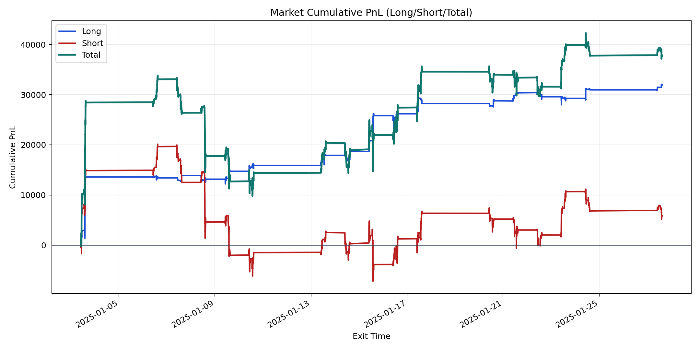
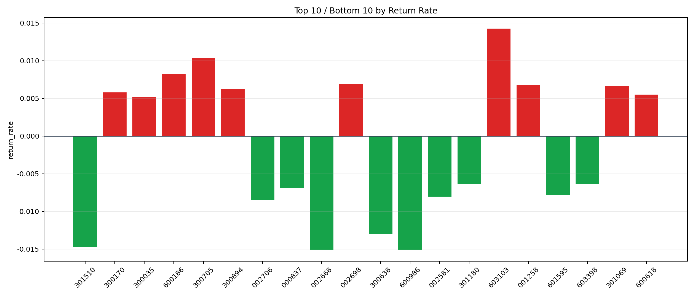

| repo_root | /home/haoranyou/data/output/alpha0.4_1w_5s_3ticks_index_filter/index_weights_1000 |
|---|---|
| period_months | 1 |
| period_label | 2025-01-03_to_2025-01-27 |
| start_time | 2025-01-03 09:50:27 |
| end_time | 2025-01-27 15:00:00 |
| n_trades | 10561 |
| n_symbols | 193 |
| total_pnl | 37737.620799999924 |
| long_total_pnl | 31924.66750000004 |
| short_total_pnl | 5812.953299999887 |
| total_entry_notional | 98159600.0 |
| long_entry_notional | 22775896.0 |
| short_entry_notional | 75383704.0 |
| total_return_rate | 0.00038445165628221717 |
| long_return_rate | 0.0014016865681156974 |
| short_return_rate | 7.711153726274696e-05 |
| top_symbols_by_return | ["603103", "300705", "600186", "002698", "001258", "301069", "300894", "300170", "600618", "300035"] |
| bottom_symbols_by_return | ["600986", "002668", "301510", "300638", "002706", "002581", "601595", "000837", "603398", "301180"] |

